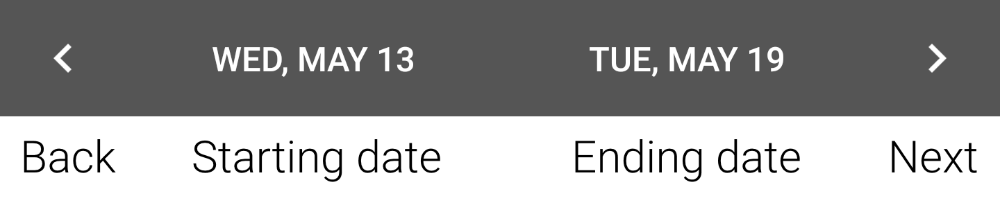
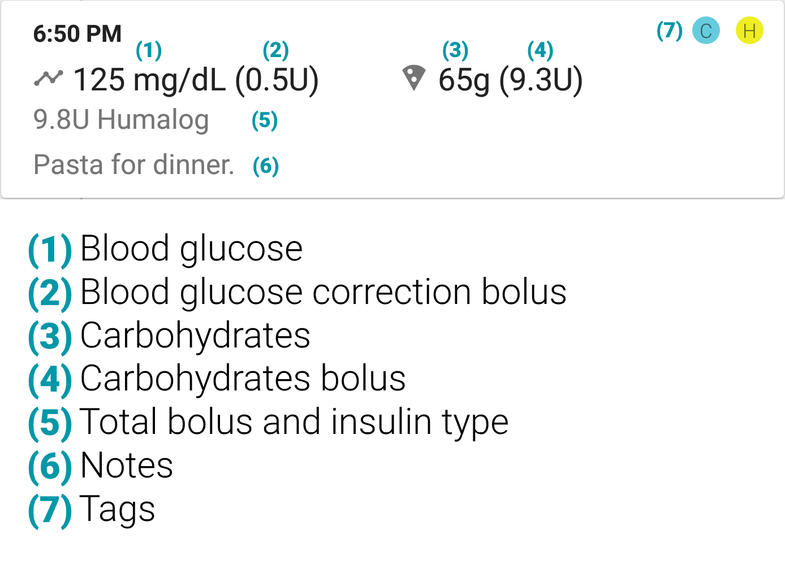

Preface
BG Monitor is an Android application created as a tool to help those with diabetes manage their blood glucose levels. Please follow the setup guide when the app is first launched. Some features may not work as intended if the app is not setup correctly. If you skipped the setup guide and wish to run it again, you can start it from the Settings menu.
Importing your data
{kind=link}
Your data must be in a CSV file named "import.csv" with the following format. Please include a header row as shown in this sample file.
If you used BG Monitor before and want to backup/restore your data, learn how to here.
- Entry type (required): 0 = entry, 1 = exercise, 2 = entry not included in statistics
- Date (required): YYYY-MM-DD format
- Time (required): HH:MM (24 hour format)
- Blood glucose (mg/dL): You may enter blood glucose amounts in either mg/dL or mmol/L or both.
- Blood glucose (mmol/L)
- BG correction bolus (U)
- Carbohydrates bolus (U)
- Notes
- Tags: Any number of tags separated by commas.
- Exercise activity: Description of exercise activity. Will only be used if entry type is exercise.
- Exercise duration/length: Will only be used if entry type is exercise.
- Exercise units: Minutes, hours, miles, etc. Will only be used if entry type is exercise.
User interface

{kind=link}

{kind=link}
{kind=link}
Filter entries and statistics.
Filters can be used to find specific entries and statistics. Available filters include entry type, mealtime, blood glucose, notes, and tags.
Filters can be removed by pressing the "Clear" button or by unchecking all items.
Settings
{kind=link}
{kind=link}
Setup your blood glucose units and targets.
Choose the blood glucose units that your country uses (mg/dL for U.S. and mmol/L for international).
Set your blood glucose targets. The target is used in calculating the amount of insulin you should take.
The target for the current mealtime will be used. If it isn't during a mealtime, then the Default target will be used.
The blood glucose target offset lets you create a blood glucose target range. If your blood glucose is within the target range, no bolus will be calculated to correct it.
You can also specify the range that blood glucose levels are considered normal.
{kind=link}
Configure bolus calculations.
Automatic insulin bolus calculations can be enabled and disabled. Negative BG boluses correct for low blood glucose by subtracting from the carbohydrates bolus.
The insulin bolus rounding can also be customized to suit insulin pumps or multiple daily injections (MDI).
You can choose to be warned when you are about to give a bolus when insulin is on board.
{kind=link}
Set the ratios used to calculate insulin dosages.
Set your insulin : blood glucose (1U : # blood glucose units) and insulin : carbs (1U : # grams) ratios. These ratios are used in calculating the amount of insulin you should take.
The ratio for the current mealtime will be used. If it isn't during a mealtime, then the Default ratio will be used.
{kind=link}
Choose when meals start and end.
Configure start and end times for each of the meals: breakfast, lunch, and dinner.
{kind=link}
Manage different types of insulin.
Add multiple insulin types and record the effective duration of each type (insulin on board).
An insulin type can also be set as the default for each meal. When adding a new entry during that meal, the insulin type will automatically be selected.
{kind=link}
Create tags to organize your entries.
Each entry can be tagged with any number of tags. Tags make it easier to organize and filter your data.
Tags can also be set as the defaults for each meal. When adding a new entry during that meal, the tags will automatically be selected.
{kind=link}
Email, backup, and restore your data.
Reports can be created and emailed from within the app.
All user data can be backed up and restored at a later time.
Tools are provided to delete certain entries and images to save storage space.